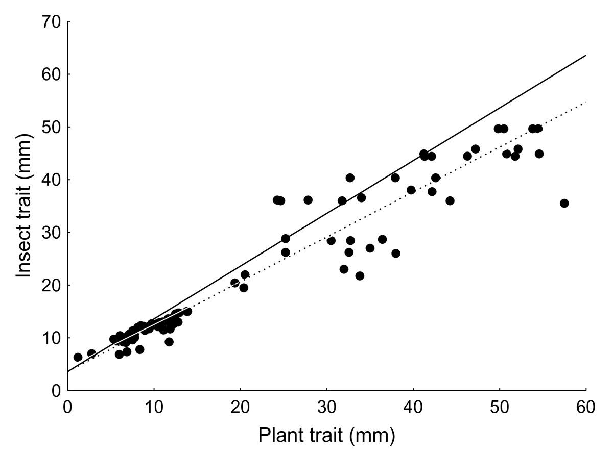
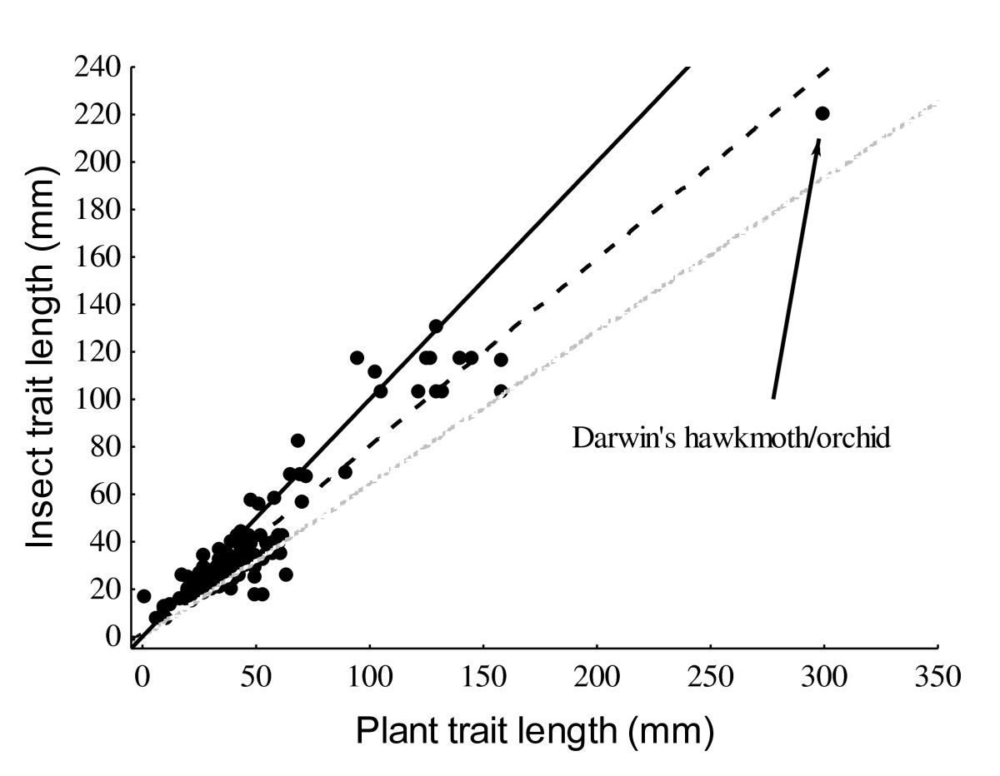
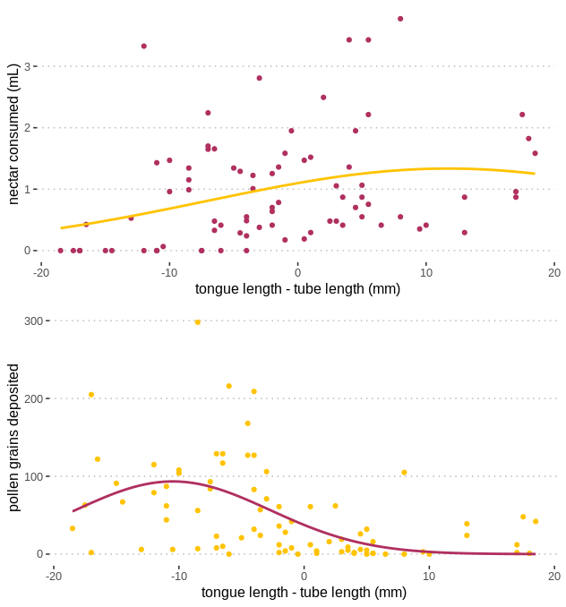
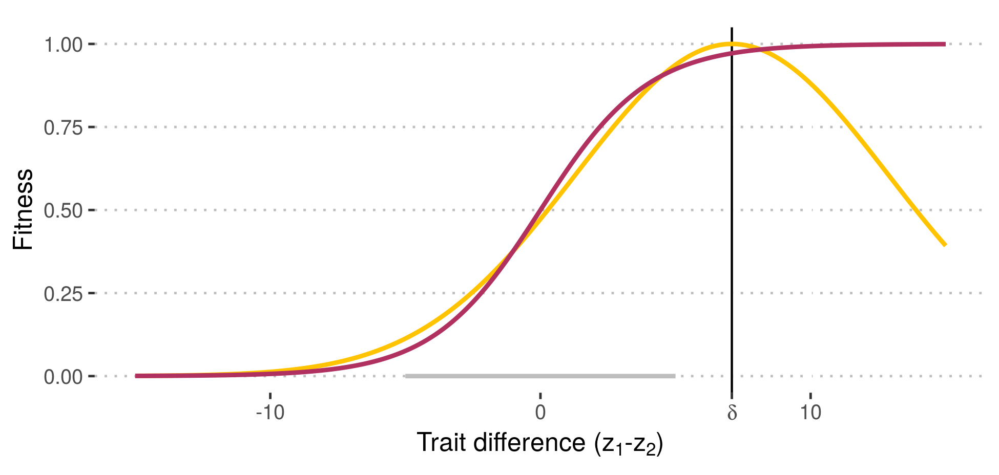
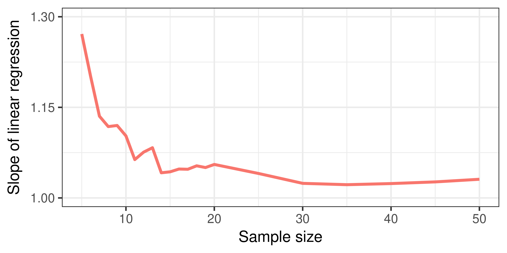
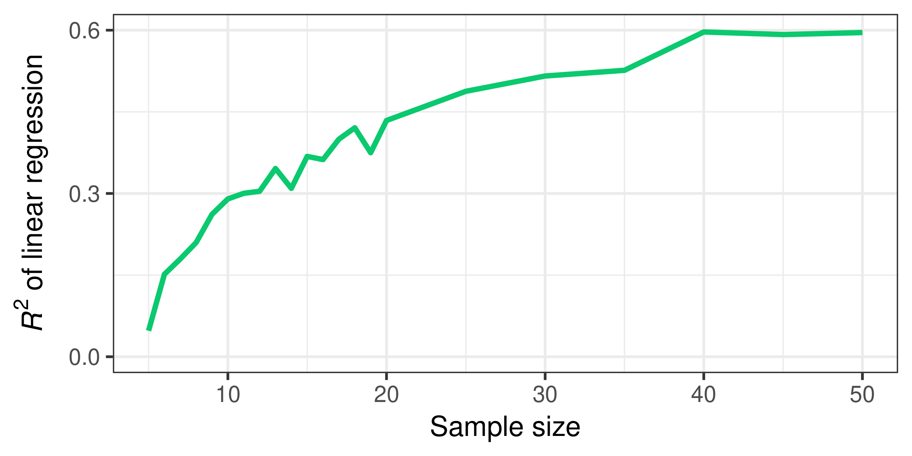
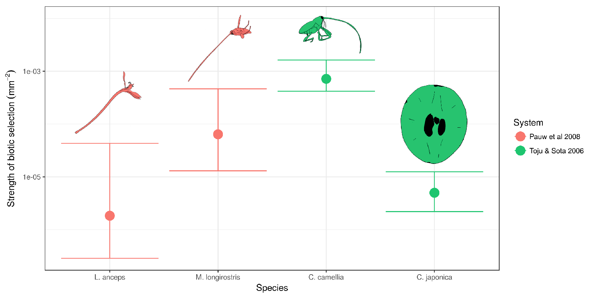
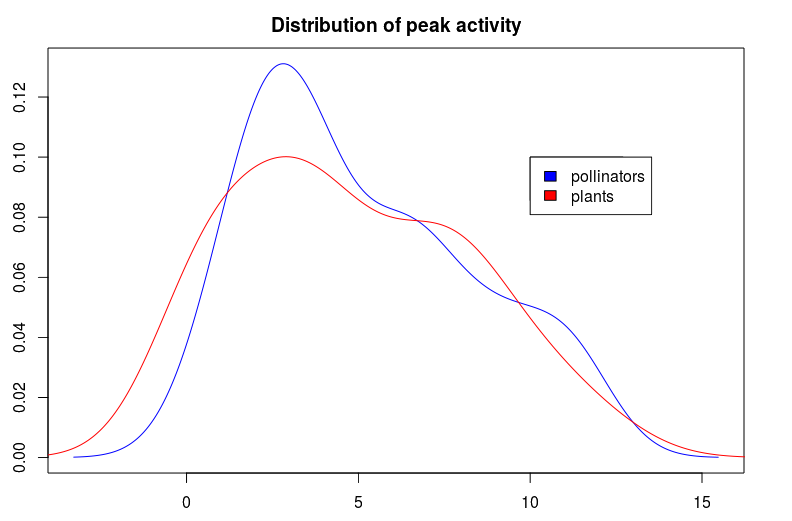
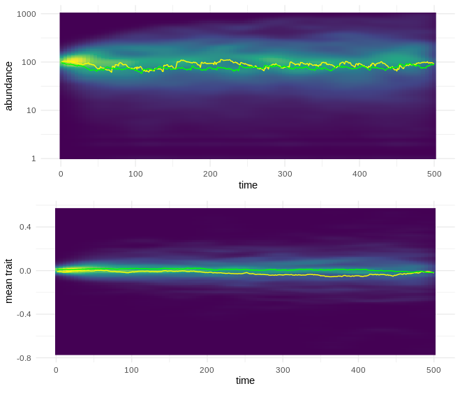
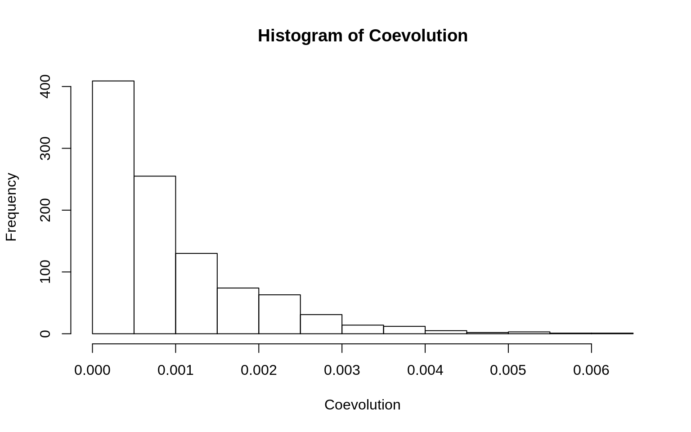

Committee meeting
Bob Week
4/18/2019
Coevolutionary theory
- theoretical quantitative genetics
- the shape of fitness surfaces
(Micro)evolutionary community ecology
- focusing on patterns of interaction & abundance
- implications of coevolution for these patterns
- not focusing on richness or coexistence
Plant-pollinator networks
- the “proving grounds” of the above work
- modelling the coevolution of phenology
- developing methods to measure pairwise coevolution for each species pair across the entire community
Outline
- Ch1: Patterns of mismatched traits explained by an optimal offset
- Ch2: A likelihood-based method for coevolutionary inference
- Ch3: Guild-by-guild coevolution in a plant-pollinator community
Chapter 1: Patterns of trait mismatching
Intraspecific matching across space and interspecific matching across taxa


Anderson et al 2010
Explanations
- asymmetric selection pressure
- generalization/specialization
- generalized species will exhibit less exaggeration
- life-dinner principle
- plants should be winning since they have more at stake
- alternative to these explanations
- the anatomy of the phenotypic interface
- generalization/specialization
The phenotypic interface

What is an optimal offset?
Def: An optimal offset is the difference (\(\delta_1\)) between the focal individuals trait value (\(z_1\)) and the non-focal individuals trait value (\(z_2\)) that maximizes fitness for the focal individual.
A mathematically convenient fitness surface that captures this interface is \[\exp\left(-\frac{B_1}{2}(z_2+\delta_1-z_1)^2\right)\]
Comparison to the sigmoid

Coevolutionary dynamics
\[\frac{d\bar z_1}{dt}=\mathscr{B}_1(\bar z_2+\delta_1-\bar z_1)\]
\[\frac{d\bar z_2}{dt}=\mathscr{B}_2(\bar z_1+\delta_2-\bar z_2)\]
- \(\mathscr{B}_i=G_iB_i\)
Model properties
When \(\delta_1,\delta_2\) have the same sign this leads to an indefinite arms race.
However, \(\bar z_1-\bar z_2\) converges to \(\frac{\mathscr{B}_1\delta_1-\mathscr{B}_2\delta_2}{\mathscr{B}_1+\mathscr{B}_2}\).
Thus, measuring \(\mathscr{B}_i\) and \(\delta_i\) enables one to predict winners of Darwinian races.
Chapter 2: A likelihood-based method for coevolutionary inference
The model
\[\frac{d\bar z_1}{dt}=\mathscr{A}_1(\theta_1-\bar z_1)+\mathscr{B}_1(\bar z_2+\delta-\bar z_1)+\sqrt\frac{G_1}{N_1}\frac{d\xi_1}{dt}\]
\[\frac{d\bar z_2}{dt}=\mathscr{A}_2(\theta_2-\bar z_2)+\mathscr{B}_2(\bar z_1+\delta-\bar z_2)+\sqrt\frac{G_2}{N_2}\frac{d\xi_2}{dt}\]
Equilibrium
\[\left(\begin{matrix} \bar z_1\\\bar z_2 \end{matrix}\right)\sim\mathcal{N}\left\{\left(\begin{matrix} \mu_1\\\mu_2 \end{matrix}\right),\left(\begin{matrix} V_1 & C \\ C & V_2 \end{matrix}\right)\right\}\]
- \(\mu_i,V_i,C\)… functions of \(A_i,B_i,\delta\).
Likelihood
Suppose \(X_1,\dots,X_n\) iid \(\mathcal{N}(\mu,\sigma^2)\).
- Denote \(\hat\mu\) and \(\hat\sigma^2\) the ML estimates.
- Then \(\hat\mu=\frac{1}{n}\sum_iX_i\)
and \(\hat\sigma^2=\frac{1}{n}\sum_i\left(X_i-\hat\mu\right)^2\).
These results can be extended to \(d\)-dimensional Gaussian random variables.
Inference
\(\left(\begin{smallmatrix}\bar z_1\\\bar z_2\end{smallmatrix}\right)_1,\dots,\left(\begin{smallmatrix}\bar z_1\\\bar z_2\end{smallmatrix}\right)_n\)
- Calculate \(\hat\mu_i,\hat V_i,\hat C\).
- Recall \(\hat\mu_i,\hat V_i,\hat C\) are functions of \(A_i,B_i,\delta\).
Invert these functions to solve for \(\hat A_i,\hat B_i,\hat\delta\).
Results


Application

Finished!

Chapter 3: Guild-by-guild coevolution in a plant-pollinator community
The data


Formal connection to community ecology
phenology = niche
Classic MacArthurian calculations hold:
If \(\alpha_i(t)\) is the phenology of species \(i\) (ie, resource utilization curve),
then \(\int\alpha_i(t)\alpha_j(t)dt\) measures the intensity of interaction.
Structure of fitness surface
- Phenology determines whether or not an interaction occurs.
- Some suite of morphological traits determine the outcome of the interaction.
- Potential extremes include nectar robbing and floral trickery.
- These extremes reduce fitness, creating “variable” mutualisms.
The simulation
- Simulate the evolution of phenology based on the above fitness surface, \(W\).
- Heterogeneous representation of species in network not assumed to be due to chance.
- This is captured by simultaneously simulating abundance dynamics.
- Fitness is taken literally s.t. \(N_{t+1}=\overline{W}N_t\).
A sample path

ABC
A basic sample-rejection algorithm:
- Draw random selection parameters (\(\psi\sim\pi\)).
- Simulate for a fixed number of generations (\(t\leq T\)).
- Compute Euclidean norm between measured p.a.t.’s and simulated p.a.t.’s (\(\nu\equiv\sqrt{\sum(x_i-\hat x_i)^2}\)).
- If norm is less than some fixed threshold, include parameters in posterior (\(\nu\overset{?}{<}\varepsilon\)).
- Repeat until posterior is sufficiently populated (\(n\leq N\)).
Hypothetical results
- Species-specific selection parameters.
- Can calculate many things, but in particular…
The distribution of pairwise coevolution
